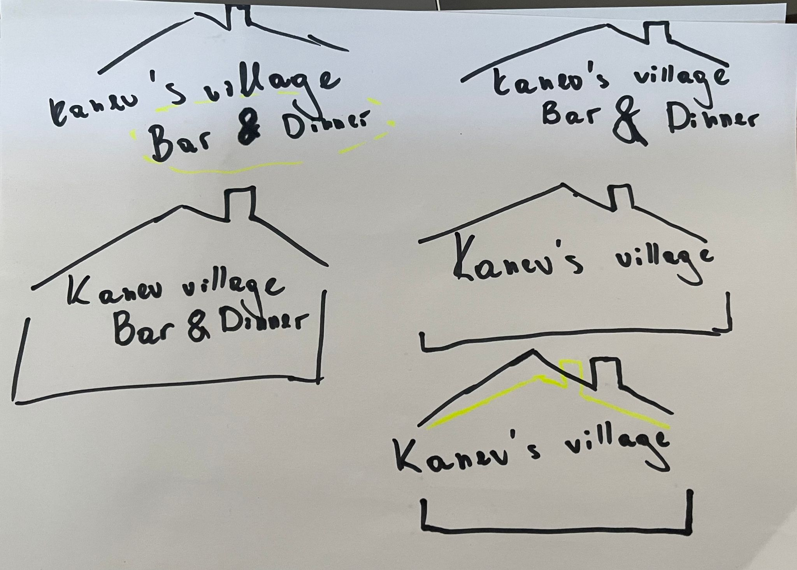

About MP

Media production refers to the creation of media content for various platforms and channels, including film, television, radio, and digital media. It involves the planning, scripting, filming, editing, and distribution of media content.
Overall, media production is a dynamic and exciting field that requires a blend of technical and creative skills. Whether you're interested in producing films, creating digital media content, or working in radio or television, a career in media production can offer a range of opportunities to express your creativity and engage with audiences.
Week 1
Colors, what the meaning of them
We had a class to learn the meaning of the colors. We mentioned that the colors in some countries means somethingelse so we ned to be carful whilke implementing our tasks.

Week 2
Typography lesson
Typography is important in media production because it helps to communicate information, establish a brand identity, convey mood and tone, and enhance readability.

Week 3
Logo creation, why, what's the purpose?
The logo incorporates an old-fashioned aesthetic to reflect the traditional and timeless qualities of the house. The house with a roof design at the top of the logo represents the physical building, while our surname in the middle signifies a personal touch and connection to the family. The foundation of the house at the bottom of the logo symbolizes the stability and strong foundation of my father's business. Overall, the logo communicates a sense of warmth, authenticity, and strength, which are important qualities for any successful business.
Mock ups
What's the purpose?
A mockup is a realistic representation of a design or product. It can be a static or interactive model that shows how the final product will look and function. Mockups are important because they allow designers and stakeholders to visualize the end product and test it in various scenarios before it is finalized. This helps to ensure that the final product meets expectations, looks good, and functions properly.
Posters
What's the purpose?
Posters are important for visually communicating messages, promoting events, or raising awareness. InDesign is a powerful and versatile app that helps designers create professional-looking posters quickly and easily by providing flexible layout, typography, color, and other design elements.
Photo portfolio
What's that?
Portfolio is a collection of photographs created by me to showcase my skills, style, and creativity. It is a carefully curated selection of images that represent the my best work, and the idea is to demonstrate my talent. Creating a strong photo portfolio requires careful selection, editing, and presentation of the images.

Video
What's the idea?
The movie tells the story of Mark and Alice, a couple bound together by a mysterious romantic relationship. It portrays the final stage of their life together, with Mark wandering through the forest, lost in thoughts of Alice. He reflects on their best moments and feels her presence, even though she exists only in his mind. This is evident when Alice occasionally disappears or appears emotionless in Mark's presence. Mark struggles to distinguish between reality and illusions as Alice merges with his cherished memories of her.
Their relationship ended with unresolved conflict, and we witness how Alice's illusory feelings gradually turn to hatred. Eventually, she intends to kill Mark. In a climactic twist, it becomes clear that Alice isn't physically present, and Mark finds himself alone, holding the very knife Alice was using to try to harm him.
This movie delves into the themes of illusory love, the proximity of love and hate, and even touches upon the concept of Stockholm syndrome. Despite the danger posed by Alice, Mark finds himself unable to escape her influence and remains entangled in their twisted bond.
Contrast movie